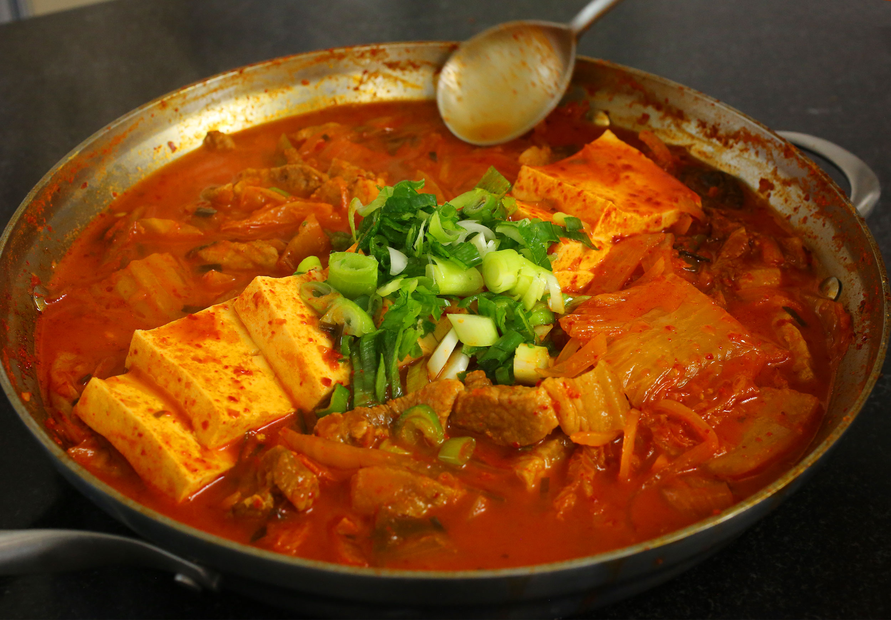

Kimchi Jjigae

Description
Kimchi Jjigae is a traditional Korean stew that usually consists of
meat, seafood, and kimchi of course!
This dish is a low cost, easy to make staple of my college years.
Feel free to invite a couple friends to chow down on this spicy soup of fermented cabbage goodness.
Ingredients
- 1 pound kimchi, cut into bite size pieces
- ¼ cup kimchi brine
- ½ pound pork shoulder (or pork belly)
- ½ package of tofu (optional), sliced into ½ inch thick bite size pieces
- 3 green onions
- 1 medium onion, sliced (1 cup)
- 1 teaspoon kosher salt
- 2 teaspoons sugar
- 2 teaspoons gochugaru (Korean hot pepper flakes)
- 1 tablespoon gochujang (hot pepper paste)
- 1 teaspoon toasted sesame oil
- 2 cups of anchovy stock (or chicken or beef broth)
Directions
- Place the kimchi and kimchi brine in a shallow pot. Add pork and onion
- Slice 2 green onions diagonally and add them to the pot
- Add salt, sugar, hot pepper flakes, and hot pepper paste. Drizzle sesame oil over top and add the anchovy stock
- Cover and cook for 10 minutes over medium high heat.
- Open and mix in the seasonings with a spoon. Lay the tofu over top.
- Cover and cook another 10 to 15 minutes over medium heat
- Chop 1 green onion and put it on the top of the stew. Remove from the heat and serve right away with rice